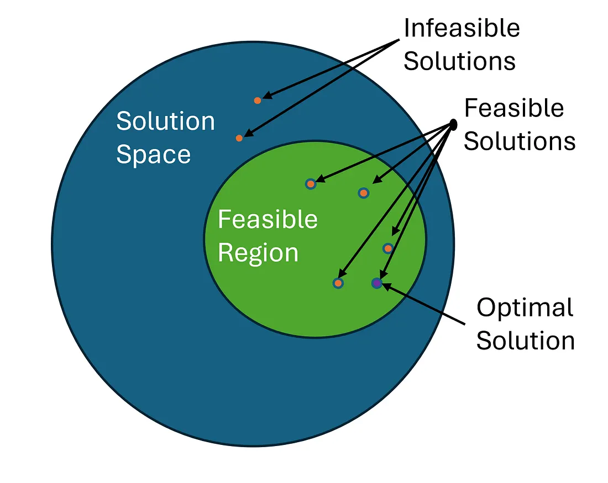

Những thành phần cơ bản trong Mô hình Tối ưu hóa
Posted: 28/03/2026
Bài viết này sẽ cung cấp cho bạn kiến thức về các thành phần cơ bản của một mô hình tối ưu hóa. Mình sẽ đi qua từng phần liên quan tới objectives (mục tiêu), constraints (ràng buộc), decision variables (biến quyết định), solution space (không gian nghiệm) và solutions (nghiệm) trong các mô hình tối ưu. Bài viết này có tham khảo một phần từ tác giả Jarom Hulet, mình sẽ cố gắng tổng hợp các ý chính và diễn đạt lại sao cho dễ hiểu nhất.
Về cơ bản, tối ưu hóa là việc cố gắng đạt được nhiều thứ tốt nhất hoặc ít thứ xấu nhất dựa trên các giới hạn tài nguyên mà ta có. Nói cách khác, đó là mong muốn có kết quả tốt nhất trong hoàn cảnh hiện tại. Bài viết này, mình sẽ đi qua các thành phần chính của mô hình tối ưu hóa , theo ví dụ về việc chọn "tuyến đường đi làm ngắn nhất" mà ta hay làm hằng ngày.
Objectives (Mục tiêu)
Objective là mục đích của việc tối ưu hóa. Nó trả lời câu hỏi: “Mục tiêu của chúng ta là gì?” Mỗi bài toán tối ưu hóa đều có một objective, và nó thuộc một trong hai dạng:
- Maximization: tối đa hóa (khi bạn muốn có nhiều nhất một thứ tốt, ví dụ: lợi nhuận)
- Minimization: tối thiểu hóa (khi bạn muốn giảm thiểu một thứ xấu, ví dụ: chi phí)
| Tình huống | Loại bài toán (Type) | Optimization Phrase |
|---|---|---|
| Lên kế hoạch sản xuất | Maximization | Maximize sản lượng (output) |
| Sắp xếp lịch học và dạy cho giảng viên và sinh viên | Minimization | Minimize xung đột lịch học (scheduling conflicts) |
| Thiết kế quãng đường di chuyển cho xe bus | Maximization + Minimization | Maximize số lượng hành khách, minimize công suất nhàn rỗi (idle capacity) |
Sau khi xác định loại bài toán, bước tiếp theo là xây dựng objective function cho mô hình tối ưu. Đây là một biểu thức toán học dùng để định lượng mục tiêu cần tối ưu, chẳng hạn như tối thiểu hóa chi phí, thời gian hoặc sai số, hoặc tối đa hóa lợi nhuận hay hiệu suất. Ví dụ, trong bài toán "tìm tuyến đường đi làm ngắn nhất", objective function có thể nhận một tuyến đường cụ thể làm đầu vào và trả về tổng khoảng cách (tính theo km) của tuyến đường đó. Khi đó, bài toán tối ưu trở thành việc tìm tuyến đường có giá trị hàm mục tiêu nhỏ nhất.
Việc thiết kế objective function đòi hỏi phải xác định rõ ràng mục tiêu cần tối ưu, đồng thời đảm bảo rằng hàm này phản ánh đúng bản chất của bài toán thực tế. Một hàm mục tiêu được xây dựng không chính xác có thể dẫn đến nghiệm tối ưu về mặt toán học nhưng không có ý nghĩa trong thực tiễn. Do đó, việc tối ưu hóa đúng objective function ngay từ đầu là yếu tố then chốt quyết định chất lượng của toàn bộ mô hình.
Hãy cùng xem kỹ hơn việc tạo objective function cho ví dụ tìm "tuyến đường đi làm ngắn nhất". “Ngắn nhất” nghĩa là gì? Ngắn nhất về thời gian? Ngắn nhất về quãng đường? Hai điều này chưa chắc đã giống nhau. Chúng ta cũng nên tạm dừng và đảm bảo rằng “shortest” thực sự là yếu tố chúng ta muốn tối ưu. Có thể còn có các tiêu chí khác tốt hơn: ví dụ, tuyến đường có chi phí thấp nhất (xăng, phí cầu đường) hoặc ít vấn đề nhất (ít kẹt xe hoặc ít vấn đề trong suốt lộ trình di chuyển). Ở đây, chúng ta sẽ giữ objective “shortest”, định nghĩa là số km ít nhất cho phần còn lại của bài viết. Qua ví dụ này, mình muốn nhấn mạnh rằng chúng ta nên luôn cẩn thận và chính xác khi quyết định objective function.
Vậy nên, objective của chúng ta là quảng đường di chuyển ngắn nhất (số km). Nếu chỉ chạy tối ưu hóa dựa trên mục tiêu này, kết quả sẽ là một đường thẳng từ nhà đến văn phòng, điều này hoàn toàn vô dụng vì không thể lái xe xuyên qua cây cối hay tòa nhà. Các constraints được thiết lập chính xác (mình sẽ giải thích ở phần sau) sẽ đảm bảo rằng kết quả tối ưu của chúng ta vừa khả thi vừa hữu dụng.
Constraints (Ràng buộc)
Trong thực tế, phần lớn các bài toán tối ưu đều tồn tại các ràng buộc (constraints), nhằm phản ánh những giới hạn vật lý, kinh tế hoặc logic của bài toán. Bên cạnh đó, vẫn tồn tại một lớp bài toán khác gọi là unconstrained optimization, tuy nhiên nội dung này sẽ được trình bày chi tiết hơn trong một bài viết riêng. Trong phạm vi bài viết này, ta chỉ tập trung vào các mô hình constrained optimization.
Quay trở lại vấn đề chính, các constraints đóng vai trò đảm bảo rằng nghiệm tối ưu không chỉ tốt về mặt toán học mà còn hợp lý và khả thi trong thực tế. Nếu không có ràng buộc, nghiệm tối ưu tìm được có thể trở nên vô nghĩa hoặc không thể triển khai trong các ứng dụng thực tế.
Một số constraints cần thiết để có nghiệm khả thi, một số được thêm vào để có giải pháp tốt hơn. Ví dụ:
- Ràng buộc tuyến đường phải đi qua mốt số địa điểm nhất định giúp kết quả khả thi
- Các constraints khác có thể cân bằng các yếu tố khác với objective function để cải thiện kết quả
Tuy nhiên, nếu thêm quá nhiều constraints, bài toán sẽ trở nên phức tạp hơn và tốn nhiều tài nguyên tính toán hơn. Đồng thời, khi các ràng buộc ngày càng chặt, không gian nghiệm khả thi (feasible set) sẽ bị thu hẹp lại, nên giá trị tối ưu của objective function thường không còn tốt như ban đầu. Trong trường hợp xấu nhất, nếu các ràng buộc quá nhiều hoặc mâu thuẫn với nhau, bài toán có thể không còn nghiệm nào thỏa mãn (infeasible). Trong ví dụ về “tìm tuyến đường đi làm ngắn nhất”, một số ràng buộc có thể được thêm vào để tăng tính thực tế của bài toán như sau:
- Ràng buộc về thời gian: thời gian di chuyển không quá 30 phút.
- Ràng buộc về đèn giao thông: khi đi làm, chỉ được đi qua không quá 3 đèn giao thông
- Ràng buộc về địa điểm: không được đi qua trường học
- Ràng buộc về giới hạn tốc độ khi di chuyển cho phép: giới hạn tốc độ di chuyển phép của đường > 60 km/h
Một ràng buộc không làm thay đổi kết quả tối ưu được gọi là non-binding constraint. Nó chỉ tăng chi phí tính toán mà không giảm chất lượng kết quả.
Decision Variables & Parameters (Biến quyết định và tham số)
Decision variables là những thứ mà chúng ta có quyền quyết định trong bài toán tối ưu. Nói đơn giản, đó là các lựa chọn mà chúng ta có thể thay đổi để tìm ra phương án tốt nhất. Ngược lại, parameters là những dữ liệu đã cho sẵn của bài toán. Chúng mô tả tình huống thực tế mà chúng ta đang đối mặt và không thể thay đổi trong quá trình tối ưu hóa.
Trong ví dụ về “tìm tuyến đường đi làm ngắn nhất”, chính là việc chúng ta chọn tuyến đường nào để đi. Nói cách khác, tối ưu hóa sẽ “thử” các lựa chọn khác nhau (các tuyến đường khác nhau) để tìm ra phương án tốt nhất, nhưng vẫn phải tuân theo các constraints. Còn parameters là những thông tin đã có sẵn của từng tuyến đường, ví dụ như số km hay số đèn giao thông. Các giá trị này được cho trước và không thể thay đổi, do đó quá trình tối ưu hóa chỉ có thể dựa vào chúng để đưa ra quyết định. Thông thường, objective function sẽ phụ thuộc đồng thời vào decision variables và parameters. Trong quá trình giải, thuật toán sẽ thử nhiều giá trị khác nhau của decision variables và sử dụng hàm mục tiêu để đánh giá chất lượng của từng nghiệm khả thi.
Hầu hết các bài toán tối ưu hóa đều có rất nhiều nghiệm khả thi cần xem xét. Quá trình tối ưu sẽ phải duyệt không gian nghiệm này để tìm ra nghiệm tốt nhất. Trong đó, objective function đóng vai trò như một thước đo, giúp đánh giá chất lượng của từng nghiệm dựa trên cả decision variables và parameters. Ở phần tiếp theo, chúng ta sẽ tìm hiểu các khái niệm quan trọng liên quan đến nghiệm và không gian nghiệm, từ đó hiểu rõ hơn cách mà quá trình tối ưu hóa thực sự diễn ra.
Feasible Region & Solution Space (Không gian nghiệm và miền nghiệm khả thi)
Solution space của một bài toán tối ưu hóa là tập hợp tất cả các giải pháp có thể có. Trong ví dụ về “tìm tuyến đường đi làm ngắn nhất”, solution space bao gồm tất cả các tuyến đường có thể đi từ nhà đến nơi làm việc. Feasible region là một tập con của solution space. Nó là những nghiệm khả thi còn lại sau khi các constraints của bài toán được áp dụng.
Một vấn đề phổ biến trong tối ưu hóa là solution space và feasible region có thể cực kỳ lớn. Với một số loại bài toán, solution space gần như vô hạn. Trong ví dụ của chúng ta (dù chúng ta đã đơn giản hóa ở trên), hãy tưởng tượng tất cả các tuyến đường duy nhất có thể đi từ điểm A đến điểm B. Có nhiều kỹ thuật để giải quyết vấn đề này, nhưng các kỹ thuật đó nằm ngoài phạm vi bài viết này và sẽ được đề cập trong các bài viết tối ưu hóa sau.
Hãy cùng tìm hiểu thêm vì sao solution space và feasible region có thể tăng nhanh như vậy. Giả sử bạn có 3 ngã rẽ phải đi để đến chỗ làm. Ở mỗi ngã rẽ, bạn có thể đi trái hoặc phải. Vậy bạn có bao nhiêu tuyến đường khả thi? (Chúng ta giả sử rằng bất kỳ kết hợp nào cũng dẫn đến nơi làm việc.)
- Ngã rẽ đầu tiên: 2 lựa chọn (trái hoặc phải)
- Ngã rẽ thứ hai: 2 lựa chọn
- Ngã rẽ thứ ba: 2 lựa chọn
Vì mỗi ngã rẽ có 2 lựa chọn, nên tổng số tuyến đường khả thi là $2^3 = 8$. Nghe có vẻ không nhiều vì với một bài toán nhỏ như vậy, mọi thứ vẫn khá dễ kiểm soát. Nhưng khi số ngã rẽ tăng lên, solution space cũng tăng theo. Giả sử bạn phải đi qua 10 ngã rẽ để đến chỗ làm, số lựa chọn lúc này đã tăng lên 1024. Nhưng nếu chỉ cần thêm một ngã rẽ nữa (từ 10 lên 11), số lựa chọn sẽ tăng gấp đôi, từ 1024 lên 2048. Và còn có thể tăng tới $2^{n}$ với $n$ là số ngã rẻ tương ứng. Điều này cho thấy rằng, khi số lượng quyết định tăng lên (ở đây là các ngã rẽ), solution space có thể tăng rất nhanh. Đây cũng chính là lý do khiến nhiều bài toán tối ưu hóa trở nên phức tạp và khó giải trong thực tế.
Solutions (Nghiệm)
Solution của một bài toán tối ưu hóa là một tập giá trị của decision variables xác định một nghiệm cụ thể trong không gian nghiệm, có thể là nghiệm khả thi hoặc nghiệm tối ưu. Trong ví dụ về “tìm tuyến đường đi làm ngắn nhất”, solution là một tuyến đường cụ thể để đi làm. Dưới đây là bảng minh họa các thuật ngữ liên quan đến solution mà chúng ta đã đề cập. Tùy vào bài toán mục tiêu và số biến quyết định, thì ta có số lượng nghiệm tương ứng
| Problem | Nghiệm cụ thể (Solution) |
|---|---|
| Lên kế hoạch sản xuất | Số lượng sản phẩm cần sản xuất (ví dụ: 1000 A, 500 B), phân bổ máy móc và nhân công cho từng công đoạn |
| Sắp xếp lịch học (Timetabling) | Thời khóa biểu cụ thể: môn học, thời gian (thứ, tiết), phòng học, đảm bảo không trùng lịch giảng viên và sinh viên |
| Thiết kế tuyến xe buýt | Lộ trình các tuyến xe (ví dụ: A → B → C), số lượng xe, tần suất chạy (ví dụ: mỗi 10 phút/chuyến) |
Solutions nằm trong solution space, và nếu đó là feasible solutions (những nghiệm khả thi mà chúng ta quan tâm), chúng cũng thuộc feasible region. Tất nhiên, không phải tất cả các solutions đều giống nhau, nếu không, sẽ chẳng có lý do gì để tối ưu hóa cả. Chúng ta muốn tìm solution tốt nhất có thể. Chúng ta đánh giá các solution với nhau dựa trên objective values của chúng. Mỗi solution có một objective value, đây là giá trị thu được khi bạn đưa solution đó vào objective function. Trong ví dụ “tìm tuyến đường đi làm ngắn nhất”, số km tương ứng với mỗi tuyến đường chính là objective value của các solution.
Optimal solution là giải pháp có objective value tốt nhất (nhỏ nhất nếu là bài toán minimization, lớn nhất nếu là bài toán maximization).
Một số thuật toán đảm bảo rằng solution tìm được là tối ưu, trong khi những thuật toán khác chỉ tìm gần tối ưu. Tại sao không luôn dùng thuật toán đảm bảo tìm ra optimal solution? Tùy thuộc vào bài toán tối ưu, việc tìm optimal solution có thể rất khó. Thường thì các thuật toán đảm bảo tối ưu tốn nhiều tài nguyên tính toán và thời gian. Nói chung, việc tìm nghiệm gần tối ưu dễ hơn nhiều so với việc tìm một nghiệm chính xác tuyệt đối.

Kết lại
Quá trình xây dựng một mô hình tối ưu hóa được gọi chung là Mathematical modelling hoặc modelling. Bao gồm các hoạt đồng xây dựng các biến, hàm và ràng buộc từ một đề bài thô. Đây là bước quan trọng để chuyển vấn đề thực tế thành dạng có thể giải bằng toán học.
Một mô hình tối ưu hóa gồm ba thành phần chính:
- Decision Variables (Biến quyết định): Những thứ chúng ta có thể kiểm soát và chọn.
- Objective Function (Hàm mục tiêu): Thước đo mà chúng ta muốn tối ưu hóa (tối đa hóa hoặc tối thiểu hóa).
- Constraints (Ràng buộc): Các giới hạn hoặc điều kiện mà các biến phải thỏa mãn.
Sau khi giải bài toán tối ưu hóa, ta tìm được các optimal solutions liên quan.